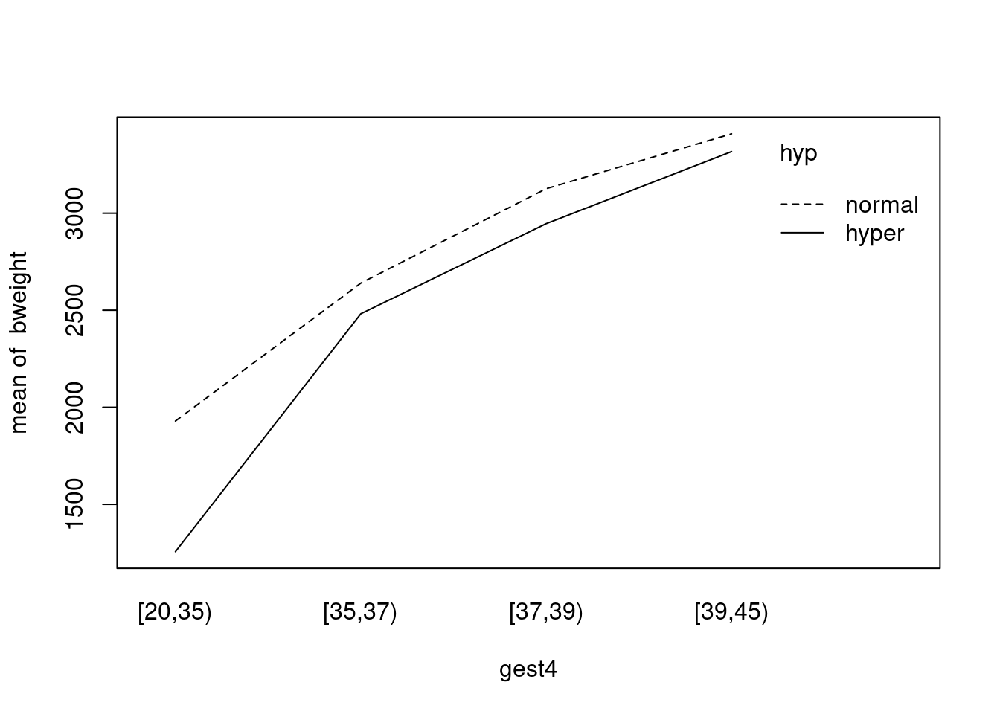
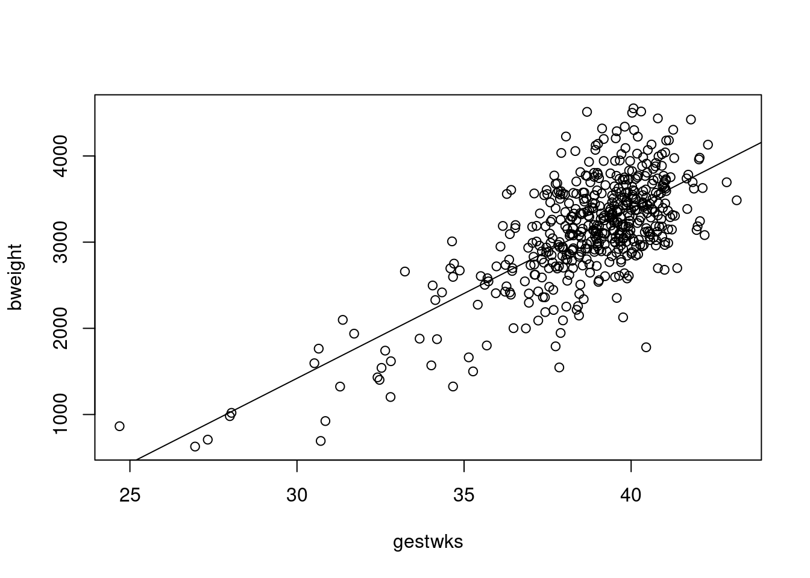
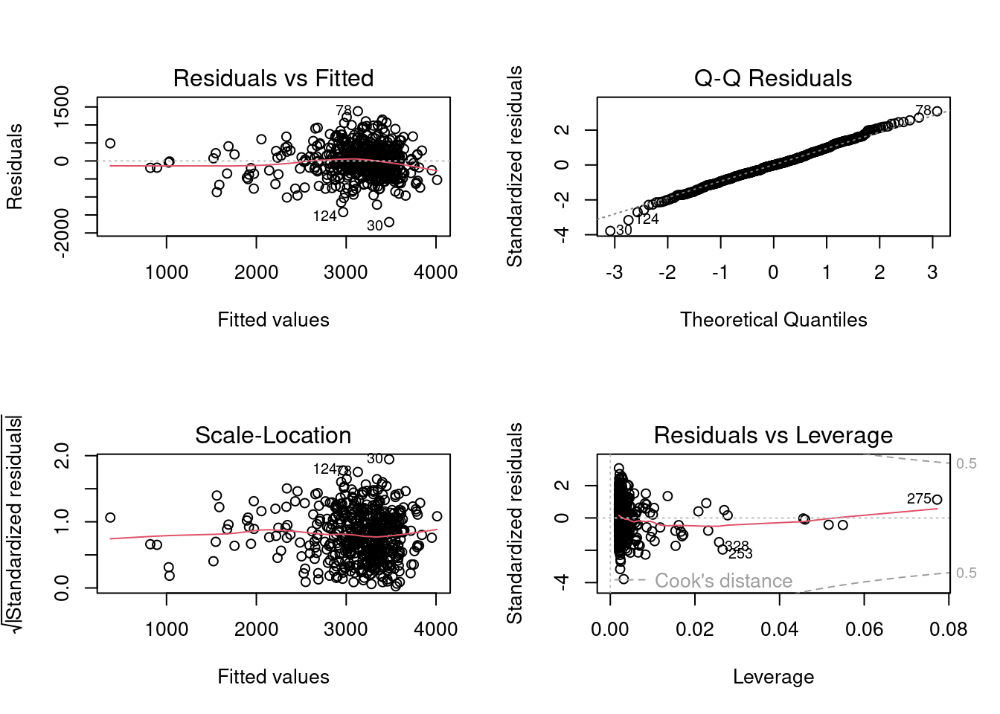
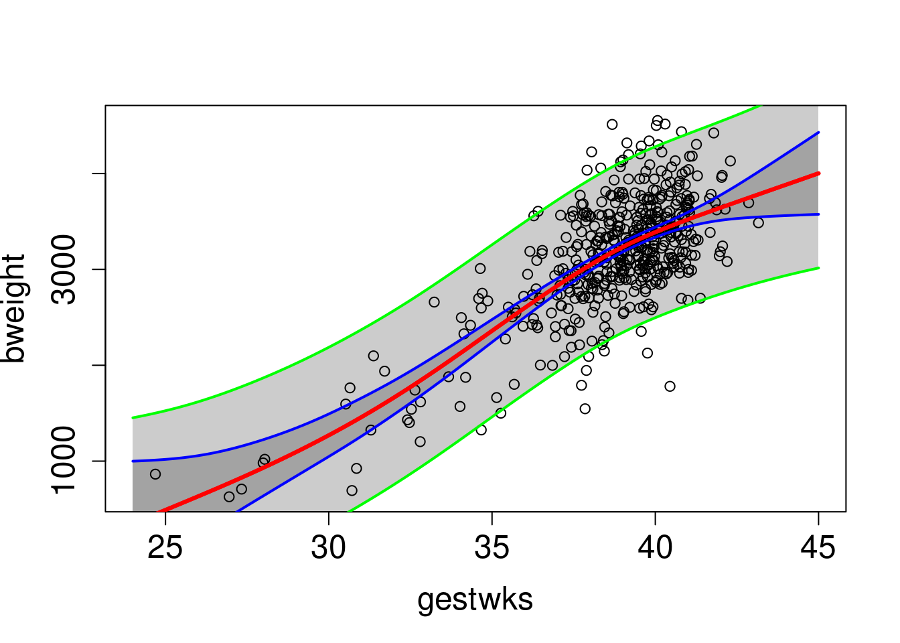
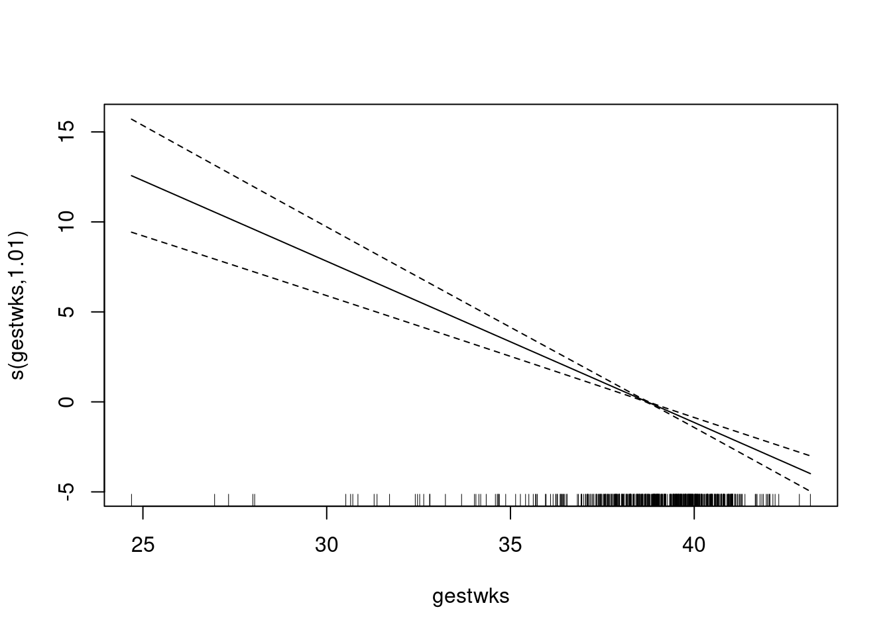
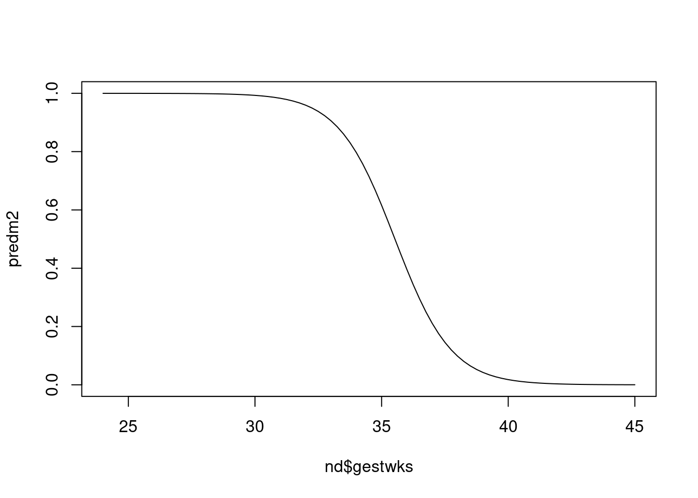
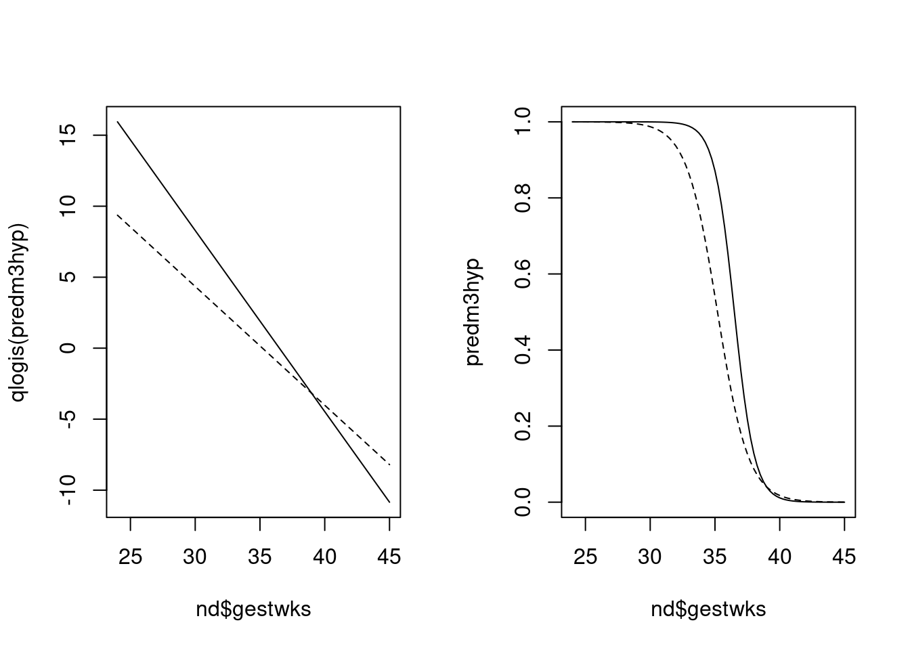

Chapter 7 Estimation of effects: simple and more complex
This exercise deals with analysis of metric and binary
response variables.
We start with simple estimation of effects of a binary, categorical or
a numeric explanatory variable, the explanatory or exposure variable of interest.
Then evaluation of potential modification and/or confounding by other variables
is considered by stratification by and adjustment/control for these variables.
For such tasks we utilize functions lm() and glm()
which can be used for more
general linear and generalized linear models. Finally, more complex
spline modelling for the effect of a numeric exposure variable is
illustrated.
7.1 Response and explanatory variables
Identifying the response or outcome variable correctly is the key to analysis. The main types are:
- Metric or continuous (a measurement with units).
- Binary (yes vs. no, coded 1/0), or proportion.
- Failure in person-time, or incidence rate.
All these response variable are numeric.
Variables on which the response may depend are called explanatory variables or regressors. They can be categorical factors or numeric variables. A further important aspect of explanatory variables is the role they will play in the analysis.
- Primary role: exposure.
- Secondary role: confounder and/or effect-measure modifier.
The word effect is used here as a general term referring to ways of contrasting or comparing the expected values of the response variable at different levels of an explanatory variable. The main comparative measures or effect measures are:
- Differences in means for a metric response.
- Ratios of odds for a binary response.
- Ratios of rates for a failure or count response.
Other kinds of contrasts between exposure groups
include (a) ratios of geometric means for positive-valued
metric outcomes,
(b) differences and ratios between proportions
(risk difference and risk ratio), and (c)
differences between incidence or mortality rates.
Note that in spite of using the causally loaded word effect, we treat outcome regression modelling here primarily with descriptive or predictive aims in mind. Traditionally, these types of models have also been used to estimate causal effects of exposure variables from the pertinent regression coefficients. More serious causal analysis is introduced in the lecture and practical on Saturday afternoon, and modern approaches to estimate causal effects will be considered on Tuesday afternoon.
7.2 Data set births
We shall use the births data to illustrate
different aspects in estimating effects of various exposures on a metric response variable
bweight = birth weight, recorded in grams.
- Load the packages needed in this exercise and the data set, and look at its content
## Loading required package: nlme## This is mgcv 1.9-1. For overview type 'help("mgcv-package")'.## 'data.frame': 500 obs. of 8 variables:
## $ id : num 1 2 3 4 5 6 7 8 9 10 ...
## $ bweight: num 2974 3270 2620 3751 3200 ...
## $ lowbw : num 0 0 0 0 0 0 0 0 0 0 ...
## $ gestwks: num 38.5 NA 38.2 39.8 38.9 ...
## $ preterm: num 0 NA 0 0 0 0 0 0 0 0 ...
## $ matage : num 34 30 35 31 33 33 29 37 36 39 ...
## $ hyp : num 0 0 0 0 1 0 0 0 0 0 ...
## $ sex : num 2 1 2 1 1 2 2 1 2 1 ...- We perform similar housekeeping tasks as in a previous exercise.
births$hyp <- factor(births$hyp, labels = c("normal", "hyper"))
births$sex <- factor(births$sex, labels = c("M", "F"))
births$maged <- cut(births$matage, breaks = c(22, 35, 44), right = FALSE)
births$gest4 <- cut(births$gestwks,
breaks = c(20, 35, 37, 39, 45), right = FALSE)- Have a look at univariate summaries of the different
variables in the data; especially
the location and dispersion of the distribution of
bweight.
## id bweight lowbw gestwks preterm
## Min. : 1.0 Min. : 628 Min. :0.00 Min. :24.69 Min. :0.0000
## 1st Qu.:125.8 1st Qu.:2862 1st Qu.:0.00 1st Qu.:37.94 1st Qu.:0.0000
## Median :250.5 Median :3188 Median :0.00 Median :39.12 Median :0.0000
## Mean :250.5 Mean :3137 Mean :0.12 Mean :38.72 Mean :0.1286
## 3rd Qu.:375.2 3rd Qu.:3551 3rd Qu.:0.00 3rd Qu.:40.09 3rd Qu.:0.0000
## Max. :500.0 Max. :4553 Max. :1.00 Max. :43.16 Max. :1.0000
## NA's :10 NA's :10
## matage hyp sex maged gest4
## Min. :23.00 normal:428 M:264 [22,35):270 [20,35): 31
## 1st Qu.:31.00 hyper : 72 F:236 [35,44):230 [35,37): 32
## Median :34.00 [37,39):167
## Mean :34.03 [39,45):260
## 3rd Qu.:37.00 NA's : 10
## Max. :43.00
## ## [1] 637.45157.3 Simple estimation with lm() and glm()
We are ready to analyze the effect of sex on bweight.
A binary explanatory variable, like sex, leads to an elementary
two-group comparison of group
means for a metric response.
- Comparison of two groups is commonly done by the conventional \(t\)-test and the associated confidence interval.
##
## Two Sample t-test
##
## data: bweight by sex
## t = 3.4895, df = 498, p-value = 0.0005269
## alternative hypothesis: true difference in means between group M and group F is not equal to 0
## 95 percent confidence interval:
## 86.11032 308.03170
## sample estimates:
## mean in group M mean in group F
## 3229.902 3032.831The \(P\)-value refers to the test
of the null hypothesis that there is no effect of sex on birth weight
(quite an uninteresting null hypothesis in itself!). However, t.test() does not provide
the point estimate for the effect of sex; only the test result and a confidence interval. – The estimated effect of sex on birth weight,
measured as a difference in means between girls and boys,
is \(-197\) g.
- The same task can easily be performed by
lm()or byglm(). The main argument in both is the model formula, the left hand side being the response variable and the right hand side after \(\sim\) defines the explanatory variables and their joint effects on the response. Here the only explanatory variable is the binary factorsex. Withglm()one specifies thefamily, i.e. the assumed distribution of the response variable. However, in case you uselm(), this argument is not needed, becauselm()fits only models for metric responses assuming Gaussian distribution.
##
## Call:
## glm(formula = bweight ~ sex, family = gaussian, data = births)
##
## Coefficients:
## Estimate Std. Error t value Pr(>|t|)
## (Intercept) 3229.90 38.80 83.244 < 2e-16 ***
## sexF -197.07 56.48 -3.489 0.000527 ***
## ---
## Signif. codes: 0 '***' 0.001 '**' 0.01 '*' 0.05 '.' 0.1 ' ' 1
##
## (Dispersion parameter for gaussian family taken to be 397442.7)
##
## Null deviance: 202765853 on 499 degrees of freedom
## Residual deviance: 197926455 on 498 degrees of freedom
## AIC: 7869.3
##
## Number of Fisher Scoring iterations: 2Note the amount of output that summary() method produces.
The point estimate plus confidence limits can, though, be concisely obtained by function
ci.lin() found in Epi package.
## Estimate 2.5% 97.5%
## (Intercept) 3229.9 3153.9 3305.9
## sexF -197.1 -307.8 -86.47.4 Factors on more than two levels
The variable gest4 became as the result of cutting gestwks
into 4 groups with left-closed and right-open boundaries [20,35) [35,37) [37,39) [39,45).
- We shall find the effects of
gest4on the metric responsebweight. bylm()and find out how the coefficients are related to the group means
## Estimate 2.5% 97.5%
## (Intercept) 1733.7 1565.3 1902.1
## gest4[35,37) 856.6 620.3 1092.9
## gest4[37,39) 1360.0 1176.7 1543.4
## gest4[39,45) 1667.5 1489.4 1845.7There are now 3 effect estimates:
[35,37) vs [20,35) 857
[37,39) vs [20,35) 1360
[39,45) vs [20,35) 1668The command
## ------------------------
## gest4 mean(bweight)
## ------------------------
## [20,35) 1733.74
## [35,37) 2590.31
## [37,39) 3093.77
## [39,45) 3401.26
## ------------------------confirms that e.g. the effect of gest4 (level~2 vs level~1) is
\(2590-1733=857\), etc.
7.5 Stratified effects, and interaction or effect-measure modification
We shall now examine whether and to what extent the
effect of hyp on bweight, i.e. the
mean difference between hypertensive and normotensive mothers,
varies by gest4 without assigning
causal interpretation to the estimated contrasts.
- The following interaction plot
shows how the mean
bweightdepends jointly onhypandgest4

It appears that the mean difference in bweight between
hypertensive and normotensive
mothers is related to gestational age.
- Let us get numerical values for the mean differences
in the different
gest4categories. Stratified estimation of effects can be done bylm()as follows:
## Estimate 2.5% 97.5%
## (Intercept) 1929.1 1732.1 2126.2
## gest4[35,37) 710.5 431.9 989.2
## gest4[37,39) 1197.0 984.7 1409.3
## gest4[39,45) 1479.9 1273.9 1685.8
## gest4[20,35):hyphyper -673.0 -1038.8 -307.3
## gest4[35,37):hyphyper -158.0 -510.5 194.5
## gest4[37,39):hyphyper -180.1 -366.4 6.2
## gest4[39,45):hyphyper -91.6 -297.5 114.4The estimated effects of hyp in the different strata defined by gest4 thus
range from about \(-100\) g among those with \(\geq 39\) weeks of
gestation to about \(-700\) g among those
with \(< 35\) weeks of gestation. The error margin especially
around the latter estimate is quite wide, though.
The \(P\)-value 0.055 from the test for
effect(-measure) modification indicates weak evidence
against the null hypothesis of no interaction between hyp and gest4.
On the other hand, this test may well be not very sensitive given
the small number of preterm babies in these data.
- An equivalent model with an explicit product term or
interaction term between
gest4andhypis fitted as follows:
## Estimate 2.5% 97.5%
## (Intercept) 1929.1 1732.1 2126.2
## gest4[35,37) 710.5 431.9 989.2
## gest4[37,39) 1197.0 984.7 1409.3
## gest4[39,45) 1479.9 1273.9 1685.8
## hyphyper -673.0 -1038.8 -307.3
## gest4[35,37):hyphyper 515.0 7.1 1023.0
## gest4[37,39):hyphyper 492.9 82.5 903.4
## gest4[39,45):hyphyper 581.5 161.7 1001.2From this output you would find a familiar estimate \(-673\) g for those \(< 35\) gestational weeks.
The remaining coefficients are estimates of the interaction effects such that e.g. \(515 = -158 - (-673)\) g
describes the contrast in the effect of hyp on bweight
between those 35 to \(< 37\) weeks and those \(< 35\) weeks of gestation.
- Perhaps a more appropriate reference level for the categorized gestational age would be the highest one.
Changing the reference level, here to be the 4th category,
can be done by
Relevel()function in theEpipackage, after which an equivalent interaction model is fitted, now using a shorter expression for it in the model formula:
births$gest4b <- Relevel(births$gest4, ref = 4)
m3Ib <- lm(bweight ~ gest4b * hyp, data = births)
round(ci.lin(m3Ib)[, c(1, 5, 6)], 1)## Estimate 2.5% 97.5%
## (Intercept) 3409.0 3349.1 3468.9
## gest4b[20,35) -1479.9 -1685.8 -1273.9
## gest4b[35,37) -769.3 -975.3 -563.4
## gest4b[37,39) -282.9 -382.0 -183.8
## hyphyper -91.6 -297.5 114.4
## gest4b[20,35):hyphyper -581.5 -1001.2 -161.7
## gest4b[35,37):hyphyper -66.4 -474.7 341.8
## gest4b[37,39):hyphyper -88.5 -366.3 189.2Notice now the coefficient \(-91.6\) for hyp.
It estimates the contrast "hyper" vs. "normal" on
bweight among those with \(\geq 39\) weeks of gestation.
The estimate \(-88.5\) g = \(-180.1 -(-91.6)\) g describes the additional
effect of hyp in the category 37 to 38 weeks of gestation upon
that in the reference class.
- At this stage it is interesting to compare the results from the
interaction models to those from the corresponding
main effects model, in which the effect ofhypis assumed not to be modified bygest4:
## Estimate 2.5% 97.5%
## (Intercept) 1792.1 1621.6 1962.6
## gest4[35,37) 861.0 627.0 1095.1
## gest4[37,39) 1337.8 1155.7 1519.9
## gest4[39,45) 1626.2 1447.9 1804.4
## hyphyper -201.0 -322.9 -79.1The estimate \(-201\) g describing the overall contrast
between hypertensive and normotensive mothers is obtained
as a weighted average of the stratum-specific estimates
that were got by effx() above.
This assumption or the
no interaction null hypothesis can formally be tested by a common deviance test.
## Analysis of Variance Table
##
## Model 1: bweight ~ gest4 + hyp + gest4:hyp
## Model 2: bweight ~ gest4 + hyp
## Res.Df RSS Df Sum of Sq F Pr(>F)
## 1 482 107195493
## 2 485 108883306 -3 -1687813 2.5297 0.05659 .
## ---
## Signif. codes: 0 '***' 0.001 '**' 0.01 '*' 0.05 '.' 0.1 ' ' 1The \(P\)-value is practically the same as before,
when the interaction was tested in effx().
However, in spite of obtaining a non-significant
result from this test, the possibility
of a real effect-measure modification
should not be ignored in this case.
7.6 Controlling or adjusting for the effect of hyp for sex
The effect of hyp is controlled for – or adjusted for – sex
by first looking at the estimated effects of hyp in the two stata defined
by sex, and then combining these effects if they seem sufficiently similar.
In this case the estimated effects were \(-496\) and \(-380\) which look quite
similar (and the \(P\)-value against no interaction was quite large, too),
so we can perhaps combine them, and control for sex.
- The combining is done by adding
sexto the model formula:
## Estimate 2.5% 97.5%
## (Intercept) 3302.8845 3225.0823 3380.6867
## sexF -214.9931 -322.4614 -107.5249
## hyphyper -448.0817 -600.8911 -295.2723The estimated effect of hyp on bweight
controlled for sex is thus \(-448\) g.
There can be more than one control variable, e.g
control=list(sex,maged).
Many people go straight ahead and control for variables which are likely to confound the effect of exposure without bothering to stratify first, but usually it is useful to stratify first.
7.7 Numeric exposure, simple linear regression and checking assumptions
If we wished to study the effect of gestation time on the baby’s birth
weight then gestwks is a numeric exposure variable.
- Assuming that the relationship
of the response with
gestwksis roughly linear (for a continuous response), % or log-linear (for a binary or failure rate response) we can estimate the linear effect ofgestwkswithlm()as follows:
## Estimate 2.5% 97.5%
## (Intercept) -4489.1398 -5157.2891 -3820.9905
## gestwks 196.9726 179.7482 214.1971We have fitted a simple linear regression model and
obtained estimates of the
two regression coefficient: intercept and slope.
The linear effect of gestwks is thus estimated by the
slope coefficient, which is 197 g per each additional week of gestation.
At this stage it will be best to make some visual check concerning
our model assumptions using plot(). In particular, when the main argument
for the generic function plot() is a fitted lm object,
it will provide you some common diagnostic graphs.
- To check whether
bweightgoes up linearly withgestwkstry
 - Moreover, take a look at the basic diagnostic plots for the fitted model.
 What can you say about the agreement with data of the assumptions of the simple linear regression model, like linearity of the systematic dependence, homoskedasticity and normality of the error terms?
7.8 Penalized spline model
We shall now continue the analysis such that the apparently curved effect
of gestwks is modelled by a penalized spline,
based on the recommendations of Martyn in his lecture today.
You cannot fit a penalized spline model with lm() or
glm(), Instead, function gam() in package
mgcv can be used for this purpose. Make sure that you have loaded
this package.
- When calling
gam(), the model formula contains expression ‘s(X)’ for any explanatory variableX, for which you wish to fit a smooth function
##
## Family: gaussian
## Link function: identity
##
## Formula:
## bweight ~ s(gestwks)
##
## Parametric coefficients:
## Estimate Std. Error t value Pr(>|t|)
## (Intercept) 3138.01 20.11 156 <2e-16 ***
## ---
## Signif. codes: 0 '***' 0.001 '**' 0.01 '*' 0.05 '.' 0.1 ' ' 1
##
## Approximate significance of smooth terms:
## edf Ref.df F p-value
## s(gestwks) 3.321 4.189 124.7 <2e-16 ***
## ---
## Signif. codes: 0 '***' 0.001 '**' 0.01 '*' 0.05 '.' 0.1 ' ' 1
##
## R-sq.(adj) = 0.516 Deviance explained = 51.9%
## GCV = 1.9995e+05 Scale est. = 1.9819e+05 n = 490From the output given by summary() you find that the
estimated intercept is equal to the overall mean birth
weight in the data. The estimated residual variance is given by
Scale est. or from subobject sig2 of the fitted
gam object. Taking square root you will obtain the estimated
residual standard deviation: 445.2 g.
## [1] 198186## [1] 445.1808The degrees of freedom in this model are not computed as simply as in previous models, and they typically are not integer-valued. However, the fitted spline seems to consume only a little more degrees of freedom as an 3rd degree polynomial model would take.
- A graphical presentation of the fitted curve together with the
confidence and prediction intervals is more informative.
Let us first write a
short function script to facilitate the task. We utilize function
matshade()inEpi, which creates shaded areas, and functionmatlines()which draws lines joining the pertinent end points over the \(x\)-values for which the predictions are computed.
plotFitPredInt <- function(xval, fit, pred, ...) {
matshade(xval, fit, lwd = 2, alpha = 0.2)
matshade(xval, pred, lwd = 2, alpha = 0.2)
matlines(xval, fit, lty = 1, lwd = c(3, 2, 2), col = c("red", "blue", "blue"))
matlines(xval, pred, lty = 1, lwd = c(3, 2, 2), col = c("red", "green", "green"))
}- Finally, create a vector of \(x\)-values and compute
the fitted/predicted values as well
as the interval limits at these points from the fitted
model object utilizing
function
predict(). This function creates a matrix of three columns: (1) fitted/predicted values, (2) lower limits, (3) upper limits and make the graph:
nd <- data.frame(gestwks = seq(24, 45, by = 0.25))
pr.Ps <- predict(mPs, newdata = nd, se.fit = TRUE)
str(pr.Ps) # with se.fit=TRUE, only two columns: fitted value and its SE## List of 2
## $ fit : num [1:85(1d)] 350 385 421 456 491 ...
## ..- attr(*, "dimnames")=List of 1
## .. ..$ : chr [1:85] "1" "2" "3" "4" ...
## $ se.fit: num [1:85(1d)] 324 309 293 278 264 ...
## ..- attr(*, "dimnames")=List of 1
## .. ..$ : chr [1:85] "1" "2" "3" "4" ...fit.Ps <- cbind(
pr.Ps$fit,
pr.Ps$fit - 2 * pr.Ps$se.fit,
pr.Ps$fit + 2 * pr.Ps$se.fit
)
pred.Ps <- cbind(
pr.Ps$fit, # must add residual variance to se.fit^2
pr.Ps$fit - 2 * sqrt(pr.Ps$se.fit^2 + mPs$sig2),
pr.Ps$fit + 2 * sqrt(pr.Ps$se.fit^2 + mPs$sig2)
)
par(mfrow = c(1, 1))
with(births, plot(bweight ~ gestwks,
xlim = c(24, 45),
cex.axis = 1.5, cex.lab = 1.5
))
plotFitPredInt(nd$gestwks, fit.Ps, pred.Ps) Compare this with the graph on slide 20 of the lecture we had. Are you happy with the end result?
7.9 Analysis of binary outcomes
Instead of investigating the distribution and determinants
of birth weight as such, it is common in perinatal
epidemiology to consider
occurrence of low birth weight; whether birth weight is
\(< 2.5\) kg or not. Variable lowbw with values 1 and 0
in the births data represents that dichotomy.
Some analyses on lowbw were already conducted
in the previous exercise. Here we illustrate further
aspects of effect estimation
and modelling binary outcome.
- We start with simple tabulation
of the prevalence of
lowbwby maternal hypertension
stat.table(
index = list(hyp, lowbw),
contents = list(count(), percent(lowbw)),
margins = TRUE, data = births
)## ---------------------------------
## ----------lowbw----------
## hyp 0 1 Total
## ---------------------------------
## normal 388 40 428
## 90.7 9.3 100.0
##
## hyper 52 20 72
## 72.2 27.8 100.0
##
##
## Total 440 60 500
## 88.0 12.0 100.0
## ---------------------------------It seems that the prevalence for hypertensive mothers is about 18 percent points higher, or about three times as high as that for normotensive mothers
- The three comparative measures of prevalences can be
estimated by
glm()with different link functions:
binRD <- glm(lowbw ~ hyp, family = binomial(link = "identity"), data = births)
round(ci.lin(binRD)[, c(1, 2, 5:6)], 3)## Estimate StdErr 2.5% 97.5%
## (Intercept) 0.093 0.014 0.066 0.121
## hyphyper 0.184 0.055 0.077 0.291binRR <- glm(lowbw ~ hyp, family = binomial(link = "log"), data = births)
round(ci.lin(binRR, Exp = TRUE)[, c(1, 2, 5:7)], 3)## Estimate StdErr exp(Est.) 2.5% 97.5%
## (Intercept) -2.370 0.151 0.093 0.070 0.126
## hyphyper 1.089 0.242 2.972 1.848 4.780binOR <- glm(lowbw ~ hyp, family = binomial(link = "logit"), data = births)
round(ci.lin(binOR, Exp = TRUE)[, c(1, 2, 5:7)], 3)## Estimate StdErr exp(Est.) 2.5% 97.5%
## (Intercept) -2.272 0.166 0.103 0.074 0.143
## hyphyper 1.317 0.311 3.731 2.027 6.865Check that these results were quite compatible with the about estimates given in the previous item. How well is the odds ratio approximating the risk ratio here?
- The prevalence of low birth weight is expected to be inversely related to gestational age (weeks), as is evident from simple tabulation
stat.table(
index = list(gest4, lowbw),
contents = list(count(), percent(lowbw)),
margins = TRUE, data = births
)## ----------------------------------
## ----------lowbw----------
## gest4 0 1 Total
## ----------------------------------
## [20,35) 6 25 31
## 19.4 80.6 100.0
##
## [35,37) 19 13 32
## 59.4 40.6 100.0
##
## [37,39) 149 18 167
## 89.2 10.8 100.0
##
## [39,45) 257 3 260
## 98.8 1.2 100.0
##
##
## Total 440 60 500
## 88.0 12.0 100.0
## ----------------------------------- Let’s jump right away to spline modelling of this relationship
binm1 <- mgcv::gam(lowbw ~ s(gestwks), family = binomial(link = "logit"), data = births)
summary(binm1)##
## Family: binomial
## Link function: logit
##
## Formula:
## lowbw ~ s(gestwks)
##
## Parametric coefficients:
## Estimate Std. Error z value Pr(>|z|)
## (Intercept) -2.8665 0.2364 -12.12 <2e-16 ***
## ---
## Signif. codes: 0 '***' 0.001 '**' 0.01 '*' 0.05 '.' 0.1 ' ' 1
##
## Approximate significance of smooth terms:
## edf Ref.df Chi.sq p-value
## s(gestwks) 1.01 1.021 68.86 <2e-16 ***
## ---
## Signif. codes: 0 '***' 0.001 '**' 0.01 '*' 0.05 '.' 0.1 ' ' 1
##
## R-sq.(adj) = 0.425 Deviance explained = 42.9%
## UBRE = -0.57194 Scale est. = 1 n = 490
Inspect the output. Would you agree, that the logit of the prevalence
of outcome is almost linearly dependent on gestwks?
- Encouraged by the result of the previous item, we continue the analysis
with
glm()and assuming logit-linearity
binm2 <- glm(lowbw ~ I(gestwks - 40), family = binomial(link = "logit"), data = births)
round(ci.lin(binm2, Exp = TRUE)[, c(1, 2, 5:7)], 3)## Estimate StdErr exp(Est.) 2.5% 97.5%
## (Intercept) -4.011 0.338 0.018 0.009 0.035
## I(gestwks - 40) -0.896 0.108 0.408 0.330 0.505Inspect the results. How do you interpret the estimated coefficients
and their exponentiated values?
-
Instead of fitted logits, it can be more informative
to plot the fitted prevalences against gestwks,
in which we utilize the previously created data frame nd
 - The curve seems to cover practically the whole range of the outcome probability scale with a relatively steep slope between about 33 to 37 weeks.
As with numeric birth weight, it may be of interest,
whether the effect of gestwks is modified
by maternal hypertension, so let’s fit
an interaction model and view the results
binm3 <- glm(lowbw ~ hyp * I(gestwks - 40), family = binomial, data = births)
round(ci.lin(binm3, Exp = TRUE)[, c(1, 2, 5:7)], 3)## Estimate StdErr exp(Est.) 2.5% 97.5%
## (Intercept) -4.019 0.364 0.018 0.009 0.037
## hyphyper -0.449 1.173 0.638 0.064 6.355
## I(gestwks - 40) -0.836 0.113 0.433 0.347 0.541
## hyphyper:I(gestwks - 40) -0.439 0.402 0.645 0.293 1.417How would you interpret the coefficients and their antilogarithms here?
- Even though there seems to be no sufficient evidence
for effect-measure modification, it can be of interest
to compare both the fitted lines on the logit scale
and the fitted curves on the probability scale between
the two groups. Function
qlogis()returns the value of the logit transformation of the given argument.
predm3hyp <- predict(binm3,
newdata = data.frame(hyp = "hyper", nd), type = "response"
)
predm3nor <- predict(binm3,
newdata = data.frame(hyp = "normal", nd), type = "response"
)
par(mfrow = c(1, 2))
plot(nd$gestwks, qlogis(predm3hyp), type = "l")
lines(nd$gestwks, qlogis(predm3nor), lty = 2)
plot(nd$gestwks, predm3hyp, type = "l")
lines(nd$gestwks, predm3nor, lty = 2) The logit-line starts from a higher level and its slope is steeper for the hypertensive mothers, which sounds reasonable. However, the two lines appear to cross at about 38 weeks. On the other hand, the vertical difference of the two probability curves appears discernible only in the area from about 32 to 38 weeks of gestation
When interpreting these findings, one needs to keep in mind that the precision of these curves is very low, because of the small number of outcome cases overall.